About
I am a Chemical Engineering Undergraduate student from National Institute of Technology, Andhra Pradesh, India (An Institute of National Importance), graduating in the academic year 2022, with extensive knowledge of the subjects in my curriculum and having interests in the fields of Lean Six Sigma, Data Science, Analysis, ML and AI, Operations Research and Supply Chain Management, looking to build on my skills in these areas.

Student:
National Institute of Technology, Andhra Pradesh
- Birthday: 10th October 1999
- City: Chennai, India
- Age: 21
- Degree: B.Tech
- Email: rahulrahul101099@gmail.com
My Chemical Engineering journey begins where my passion for Chemistry had started during my 11th and 12th Grade. I had always firmly believed that as an Engineer, I should equip myself with certain skills in other domains useful to my field. Having said that, I had always worked towards bringing the flavor of programming, into solving analytical problems posed in the subjects of my Chemical Engineering course. I follow space exploration and rocket science passionately with interests in all fields of science, astronomy and history!
The motivation and purpose behind this website arises from my thoughts that although a conventional resume or CV would be able to completely convey the learning curve I have taken in my career so far, it wouldn't paint a comprehensive picture of my character and personality.
Skills
Here are some of the skills I have gained throughout my academic life
Resume
Summary
Rahul N
Innovative student, Six Sigma enthusiast, passionate Data Analyst and Data Scientist.
- Chennai, India
- rahulrahul101099@gmail.com
Education
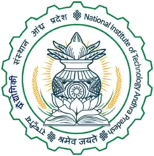
Bachelor of Technology, Chemical Engineering
2018 - 2022
National Institute of Technology, Andhra Pradesh
Studied core subjects of Chemical Engineering such as Heat Transfer, Mass Transfer, Thermodynamics, Transport Phenomenoa, Process Control, Equipment Design. Completed 6 Semesters
Most Recent SGPA: 9.35/10
CGPA: 8.16/10
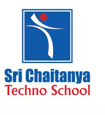
Senior Secondary
2013 - 2017
Sri Chaitanya Techno School, Marathahalli, Bangalore
Studied Physics, Math and Chemistry
12th Grade: 94.4%
10th Grade: 10/10 CGPA
Professional Experience

Intern
Aug 2021 - Present
Advanced Manufacturing Technology Development Center – Indian Institute of Technology, Madras
- Selected to work on a project under the ‘kite’ initiative, a platform launched by AMTDC – IIT Madras.
- Currently working on the design of a system for the automation of visual inspection of quality in a manufacturing process.
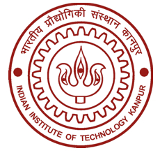
Intern
Aug 2021 - Sept 2021
Indian Institute of Technology, Kanpur
- Took up a Supply Chain Project, under the supervision of Dr. Subhas C. Misra.
- Implemented a heuristic algorithm for optimizing material flow in a multi – mode, multi – product Supply Chain Network.
- This involved optimizing the distribution costs and the vehicle transportation costs over the multi – echelon network.
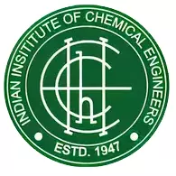
Project Intern
July 2021 - Present
Indian Institute of Chemical Engineers
- Ongoing training by industry experts in the Six Sigma methodology by analyzing a multitude of real - life case studies.
- Presently working on a project to implement the Six Sigma methodology to a Chemical Industry.
Data Science and Machine Learning Intern
July 2021 - Present
The Intern Academy
- Selected in the 50°C Summer Internship Program as Data Science and Machine Learning intern.
- Created a Machine Learning model to recognize the Handwriting of a person and convert it to text using a Support Vector Machine classifier.
- Currently working on analyzing biomedical voice measurements and creating a model from a Parkinson’s Disease Dataset to identify symptoms of the Parkinson’s Disease using Logistic Regression.
Machine Learning Intern
June 2019 - July 2019
Verzeo Edutech (Authorized Education Partner, Microsoft)
- Successfully implemented a project for determining the topic of an article using Machine Learning in Python.
Extra Curricular Activities and Awards

ABSORB – Chemical Engineering Departmental Magazine |
NIT – Andhra Pradesh
August 2020 - Present
- Currently occupying the position of Chief Editor, leading a team of 10 individuals as a Lead Designer, and carrying out content gathering works for the quarterly departmental magazine, ABSORB.
- Was also involved in the editorial and content gathering teams in the previous edition of the magazine, which gained massive downloads all over the institute and received praise from multiple faculty members and students for its ingenious content and innovative design.

Developer Student Clubs (Google Developers) | NIT – Andhra
Pradesh
October 2019 – August 2020
- Delivered multiple lectures on Web development using HTML, CSS, and JavaScript, Introduction to GIT and GITHUB, Google Cloud Platform Crash Course and Mobile App Development using Flutter to an audience of over 50 students from various backgrounds and departments at NIT Andhra Pradesh.
- Curated and organized multiple workshops on a variety of new technologies and developments and successfully oversaw the smooth functioning of the club.

Entrepreneurship and Innovation Cell | NIT – Andhra
Pradesh
October 2019 – August 2020
- Occupied positions of Joint Secretary, Executive Member and Associate Member.
- Helped lead a team of 20 individuals in the cell to organize various events campus – wide and incubate innovation amongst the members.
- Curated a variety of events, most notably, WebTalks 2.0, where many entrepreneurs and business leaders presented their ideologies and gave inspiring lectures about industry standards and expectations, with emphasis on profile building and career growth.
- Involved in the organization of a mock IPL auction, which promoted the ideology of proper money management amongst the participants.
- Promoted overall growth as a team and carried out team – building exercises.

Chemical Engineering Association | NIT – Andhra Pradesh
September 2019 – Present
- Current Secretary, previous Joint Secretary of the Association.
- Played a crucial role in working with multiple teams across the department in conducting activities for the techno – cultural fest at the NIT Andhra Pradesh.
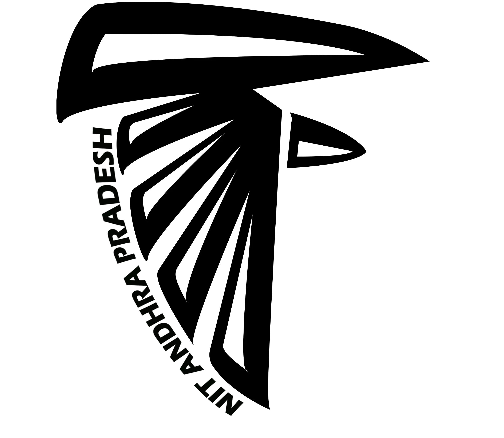
Task Force | NIT – Andhra Pradesh
October 2019 – August 2021
- Acted as the Operations Team Co-ordinator
- Undertook various administrative activities and decisions on behalf of the students.
- Helped to work on bridging the gap between the various other modules of the Task Force and the institute administration
- Played a managerial role by assigning tasks to various team members, evaluating reports, helping organize events across the institute.
Recognized as a Microsoft Technology Associate in Programming with Python
January 2020
Regional Topper, Informatics Practices – CBSE 2017 12th grade examinations awarded by TVS Motor Limited.
August 2017
School-level Gold and Bronze Medals in the International Science and Mathematics Olympiad respectively
2013
Projects
Optimizing material flow in a multi – echelon, multi – mode, multi – product Supply Chain Network.
Deep Eutectic Solvents, Preparation Methods and Applications
Study of Pollutants (PM2.5, PM10, CO, NO2, SO2 ) and its effect on fog formation using Python
Chemical Virtual Laboratory
Damage Review of Hurricane Harvey
Covid 19 Data Analysis using Python
Supply Chain Management Strategy for Medical Technologies Corporation
Other Projects
- Created an app inspired by the show Silicon Valley, named SeeFood, using Flutter and passing images through a neural network to identify different kinds of food.
- Developed a website named FMAIL that can send emails and chat messages using PHP and HTML.
- Worked on an application for DSC – NIT Andhra, to send event reminders using Google Firebase and Flutter.
Research Experience
Assistant
April 2021 - Present
- Currently working under Dr. Prince Kumar Baranwal on co – authoring a manuscript, under scrutiny for publication.
- Actively conducted literature reviews on the areas involving the chemistry of Deep Eutectic Solvents and their applications to the field of electrochemistry.
- Specific Areas of focus include the processes of electrodeposition and electropolishing of metals such as Aluminium, Chromium, Copper, Nickel, Zinc and their alloys, with emphasis on the factors affecting electrodeposition.
Download My Resume
My Work on ABSORB, the Chemical Engineering Departmental Magazine - NIT Andhra Pradesh
Take a peek at the magazine here!
My Accomplishments
These are my non - coursework accomplishments and certificates.
Specializations
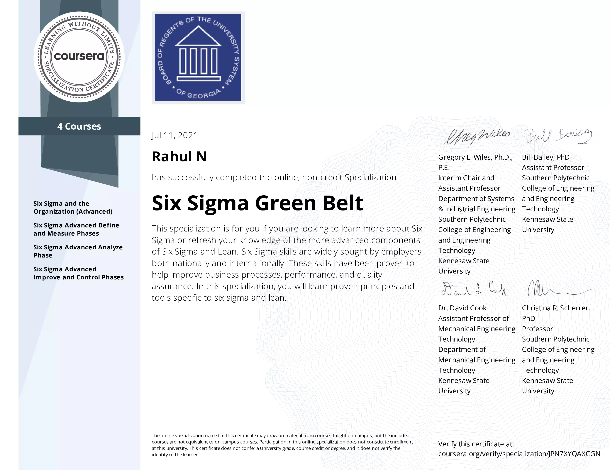
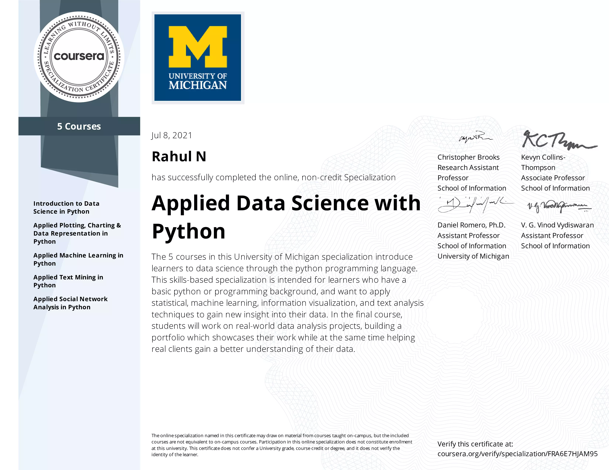
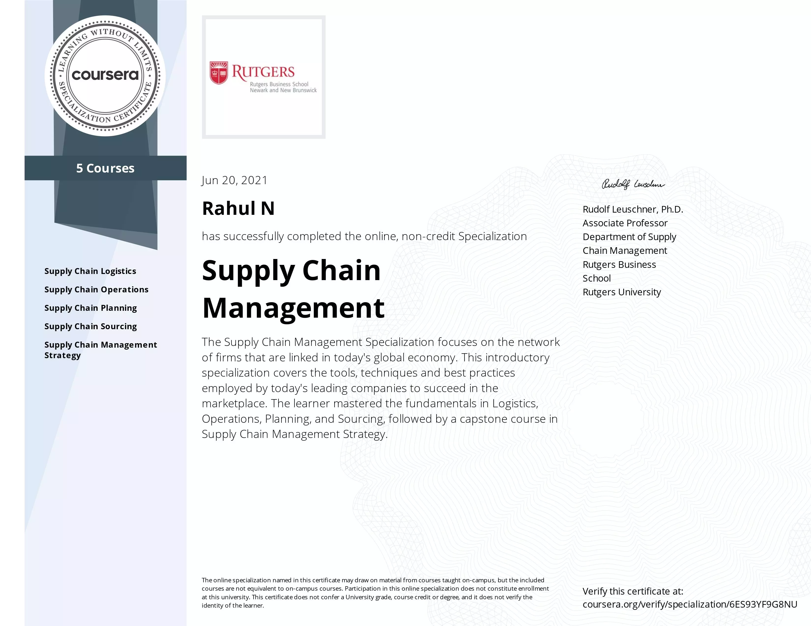
Course Certificates
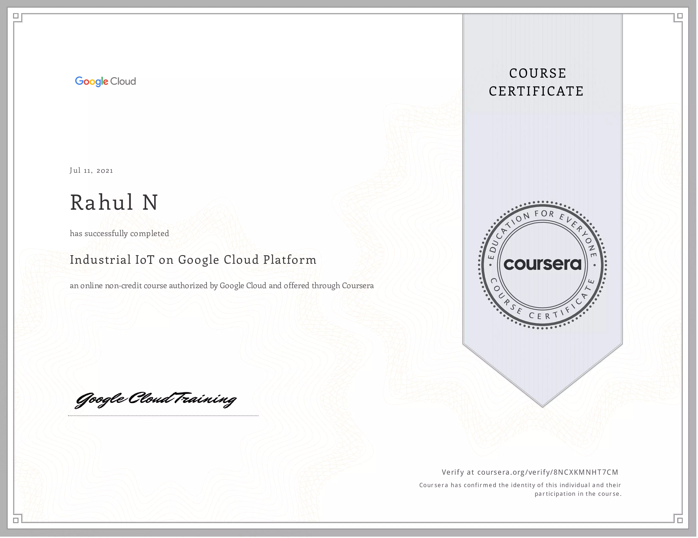
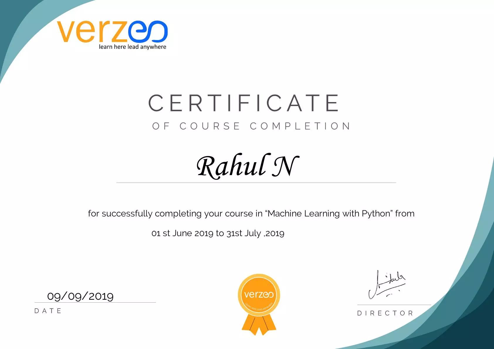
Other Certificates
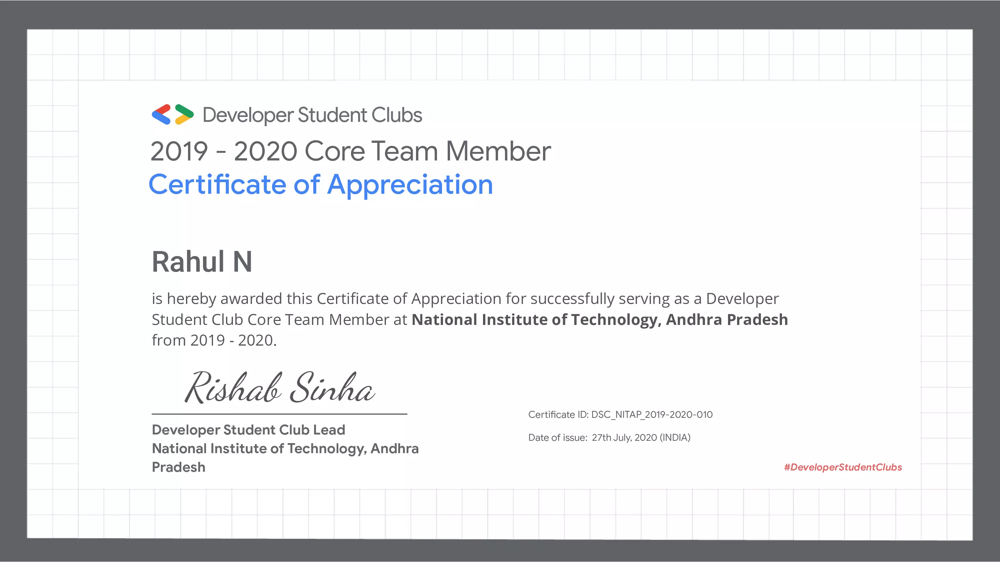
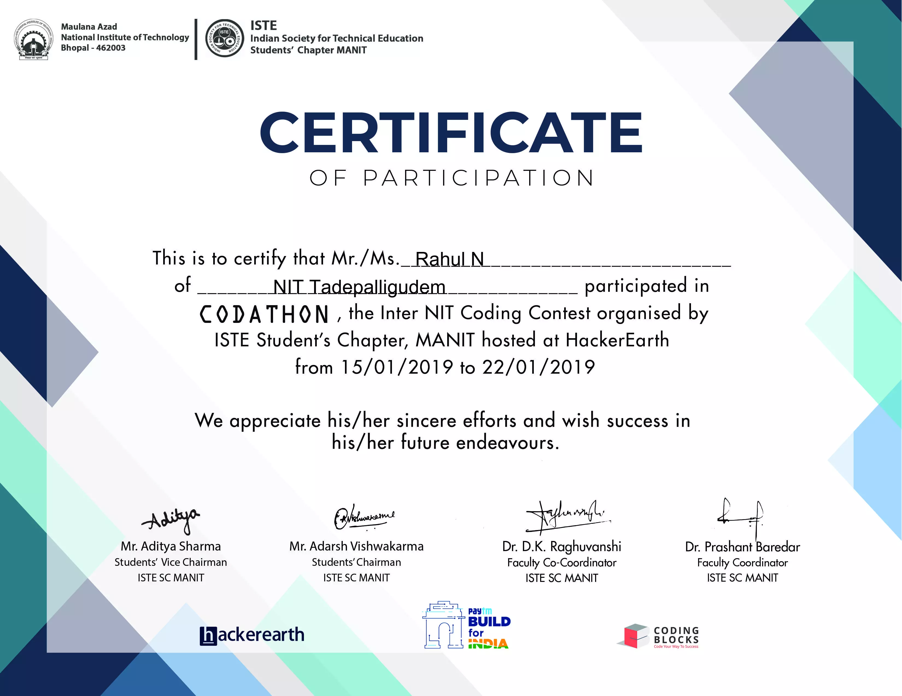